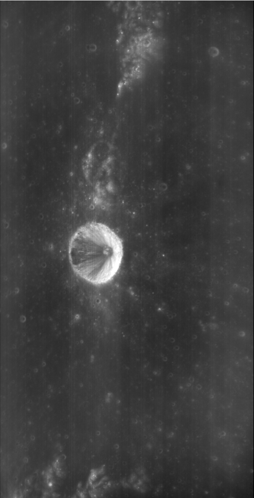
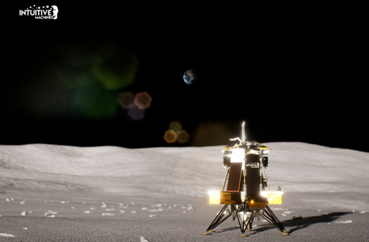

미디어
ALL
- ALL |
- NEWS |
- PRESS |
- PHOTO |
- VIDEO
News

2023-05-12
광시야편광카메라가 관측한 비흐만 크레이터
폴캠은 궤도선 진행 방향에 수직하게 양 옆을 바라보는 두 대의 카메라로 구성되어 있습니다. 직하점으로부터 좌우 45° 거리 지역을 320, 430, 750 nm 세 개의 파장대역으로 관측합니다. 폴캠 관측으로부터 달 전면의 최대편광도(Pmax) 등과 같은 편광 특성 지도를 도출하고, 월면의 티타늄 분포를 조사합니다. 폴캠은 최대 140°에 이르는 다양한 위상각에서 월면이 태양빛을 반사하는 특성을 관측합니다.
자세히 보기Press
